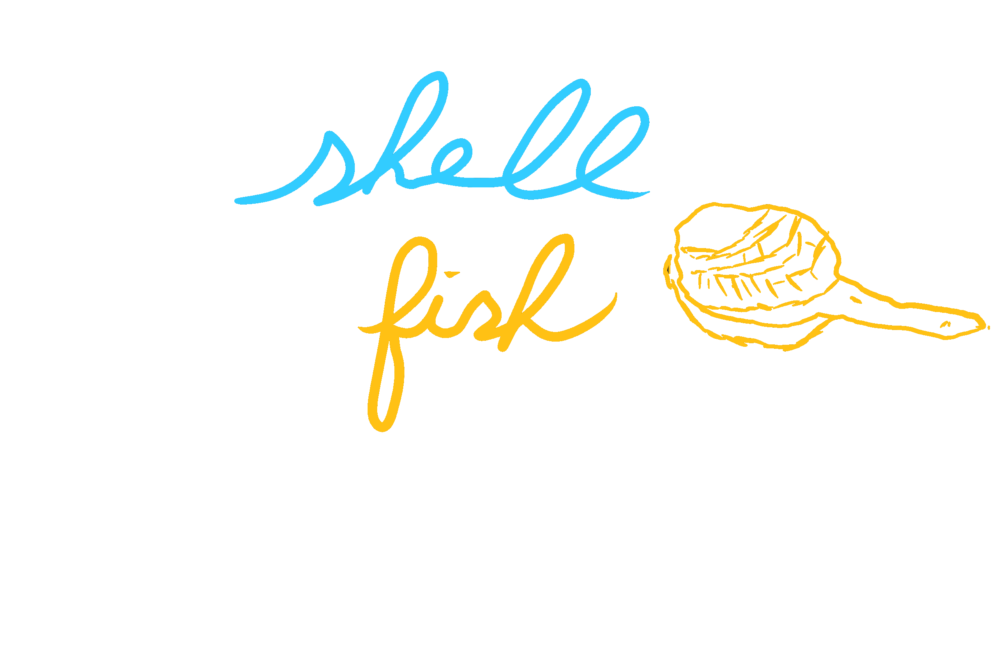

Shellfish
They say the truth is blunt. That for every harsh word spoken regardless of the tears shed and the relationships sunk is an effort to better the world. How can we be capable of cooperation, if we are also capable of telling lies? In fact, the lies are so common, you would not notice them. The Tower of Babel did not give rise to different languages, that’s what they want you to think. God did not destroy the Tower, otherwise, it would not be our fault. But it is ours. The Tower of Babel collapsed because man could not bear the truth, and worse, could not bear speaking the truth. It was built on trust, and it collapsed soon after. And to comfort ourselves, we called those lies “miscommunication,” a new language. And through time, the lie had evolved into the common story you hear now.
And what did I do? I believed them. Every word they spoke, I took close to my heart. I don’t know who all of them are, but I shared their mission, which is to rebuild the Tower of Babel, one man, and woman at a time. It’s not an easy task, and I started with my friends. I exposed them to this very truth I just told you. I told them that they were slaves to the other extreme, the kind people, and they were getting manipulated day by day by them. I told them that I was their true friend, because no matter what, I will always speak the truth, and I will never try to manipulate them. I wanted them to know it all, and even if they’re hurt, it would be for their good.
I was pushy. I was being “too” blunt, some said it was unnecessarily so. I huffed! How dare they! I was on my mission to rebuild the great Tower of Babel, where the truth of everything lies on the apex, and they were ignorant enough to ignore me! To neglect the truth! They want to live in their fantasy, fine! People like them do not deserve the truth anyways. But they will not stop me. I’ve yet to get one person under me, but an army will unite from this. They, the ones who convinced me, are going to still be there for me. Yes, they must have an army! They have experience! How else was I recruited so easily? Guillable is not the trait of a truthful man. Stubbornness neither, for they both require a fantasy, and I live in no fantasy.
I approached my old friends, my real friends. I told them the failures of my mission. They listened. Without hesitation, they faulted me. “How stupid are you, you can’t tell them everything at once! Of course, they’re not gonna believe you!” Yes, they were right. I was stupid. People by default are defensive, the truth is a hard pill to swallow. I go to my house and take a rest. And I was met with a dream.
I was floating in space. Behind me, very loudly spoke, the mighty Shellfish. I turned around, and it was large. Its body could not be fully seen, in all of its glory. I thought it was God, but it clarified to me. It’s not God, it’s a Shellfish. “How am I to believe you?” I cried. My voice, even in the vacuum of space, was still picked up by the Shellfish. “Look at me, am I not a Shellfish?” I nodded. Yes, it’s a Shellfish.
After a few minutes, days, or however time flowed in this space, the Shellfish proceeded. “But,” it said loudly. Very loudly, actually. Yet my body did not pick up the vibrations. I suppose it’s because we’re in space. He continued, “How do you know that God is not a Shellfish?” He made a fair argument, I was inclined to believe that he is actually God. Without my reply, he continued again. “Look around me, look very closely around. Pay attention to what’s around you. Do not look at me or yourself, look around everything in front of you, and yourself.” Looking away from the Shellfish proved difficult, but with effort, I looked around, and Shellfish! Shellfish everywhere! They were all floating, eating, and even building! I turned back and the Shellfish finally said “I taught you everything. Now goooooo”, and he opened his big mouth and was swimming towards me. I was about to be consumed by a Shellfish, and my life was going to forever change.
I woke up. What a weird dream, I thought. I got off my bed and walked to my refrigerator. When I opened it, I saw something astonishing. I saw more Shellfish. No other fish was stored, only Shellfish. I quickly closed it out of fear and turned around, and a big Shellfish with arms and legs started embracing me. It hoisted me and I could no longer use my legs to run. The Shellfish waived me around saying “Look! Look! Look!” It opened the refrigerator door and threw me in with the other Shellfish. I looked at its hideous face before it closed the door! And I was stuck, once again, with more Shellfish.
Unlike the other Shellfish, these ones were regular size. That was a comforting fact. They also did not speak or move or have arms or legs. They were Shellfish. Regular Shellfish. I was between two shelves, probably laying on Shellfish. I began to cry. I cried at how absurd this is. I didn’t know what to do. I was stuck, and I was about to die because I was too cool. I had food, but no water, though I didn’t even like Shellfish. I kicked but I felt the fridge tipping over, and immediately stopped. I mean stopped. My heart was as frozen as the Shellfish next to me. I was scared. The fridge ended up returning to its original pose. But I was still scared. I saw everything in front of me, but not a single way out. No direction, only Shellfish.
The mighty Shellfish’s voice came back to me, however. “Look around,” it said. Yes, I can twist and turn! It took effort, but I had no alternative. I turned and turned, and saw… nothing. “Mighty Shellfish,” I asked, “please guide me.” No answer. I then remembered I got out of that stupid dream when I looked back! So I turned more and more, turning back to my original pose, and in the middle of turning back, I saw a shadow!
I turned more back to where I originally was, and the shadow disappeared. The front of me was completely white, with no texture or standing-out colors. Just white. When I twist slightly back, the shadow forms once again. I squeezed my legs and leaned forward, then put my hand on where the shadow was and sensed an unusual hole sitting at the back of the fridge. It was… in the shape of a Shellfish, and with its depth, it was able to support, or accept, four Shellfishes. The first three were right next to my arms, so I was able to insert them with ease. But where was the last Shellfish? How come there were only three? How come it looked like there were so many!
I looked at myself. Stupid me! I wasn’t gonna fit there, I’m a human, not a Shellfish. I look around me, padding my pockets and jacket. The bully Shellfish had placed one right in my pocket! I take it out and place the last and final Shellfish. The fridge started speaking in a human voice. “You have passed the test, human. Now go through meeeeee” and the fridge shrank in size and ate me.
I woke up, once more. This time, I woke up in reality. My phone was ringing, and there were 10 missed calls, all from the same old friend. I pick up the phone. “Finally, you picked up the phone,” he told me. “Did you talk to any more people? Tell me the honest truth.” I told him, no, but I talked to Shellfish. I told him “look around you!” I told him, where are they? I said to him, do not look at me! Look at what’s around me! Around me exists no army and no tower. Around me, there were once people, but now there’s no one! I told him this is the honest truth! He did not understand me, however, and he soon hung up the phone. I told him the honest truth, but he stuck to his own.